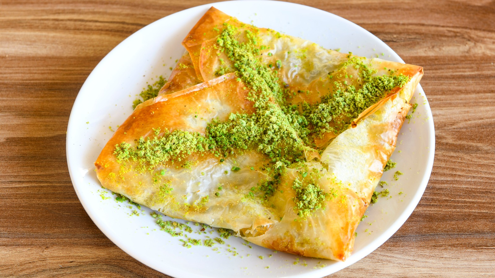

A type of sweet börek, katmer is a specialty of Gaziantep, or simply Antep – Türkiye's gastronomic capital and a rich melting pot of diverse cultures and cuisines nestled in southeastern Anatolia – an ancient city whose claim to fame is being home to world’s finest pistachios and the delicious Antep baklavası.
Meal prep time : 25 minutes
Servings : 6